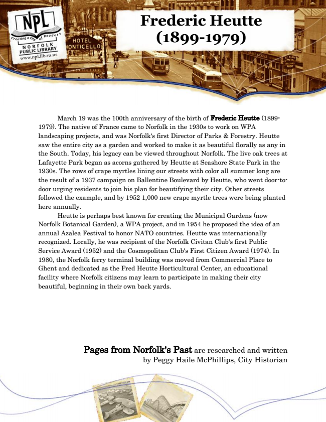

Frederic Heutte (1899-1979)
March 19 was the 100th anniversary of the birth of Frederic Heutte (1899- 1979). The native of France came to Norfolk in the 1930s to work on WPA landscaping projects, and was Norfolk's first Director of Parks & Forestry. Heutte saw the entire city as a garden and worked to make it as beautiful florally as any in the South. Today, his legacy can be viewed throughout Norfolk. The live oak trees at Lafayette Park began as acorns gathered by Heutte at Seashore State Park in the 1930s. The rows of crape myrtles lining our streets with color all summer long are the result of a 1937 campaign on Ballentine Boulevard by Heutte, who went door-to- door urging residents to join his plan for beautifying their city. Other streets followed the example, and by 1952 1,000 new crape myrtle trees were being planted here annually.
Heutte is perhaps best known for creating the Municipal Gardens (now Norfolk Botanical Garden), a WPA project, and in 1954 he proposed the idea of an annual Azalea Festival to honor NATO countries. Heutte was internationally recognized. Locally, he was recipient of the Norfolk Civitan Club's first Public Service Award (1952) and the Cosmopolitan Club's First Citizen Award (1974). In 1980, the Norfolk ferry terminal building was moved from Commercial Place to Ghent and dedicated as the Fred Heutte Horticultural Center, an educational facility where Norfolk citizens may learn to participate in making their city beautiful, beginning in their own back yards.
Pages from Norfolk's Past are researched and written by Peggy Haile McPhillips, City Historian